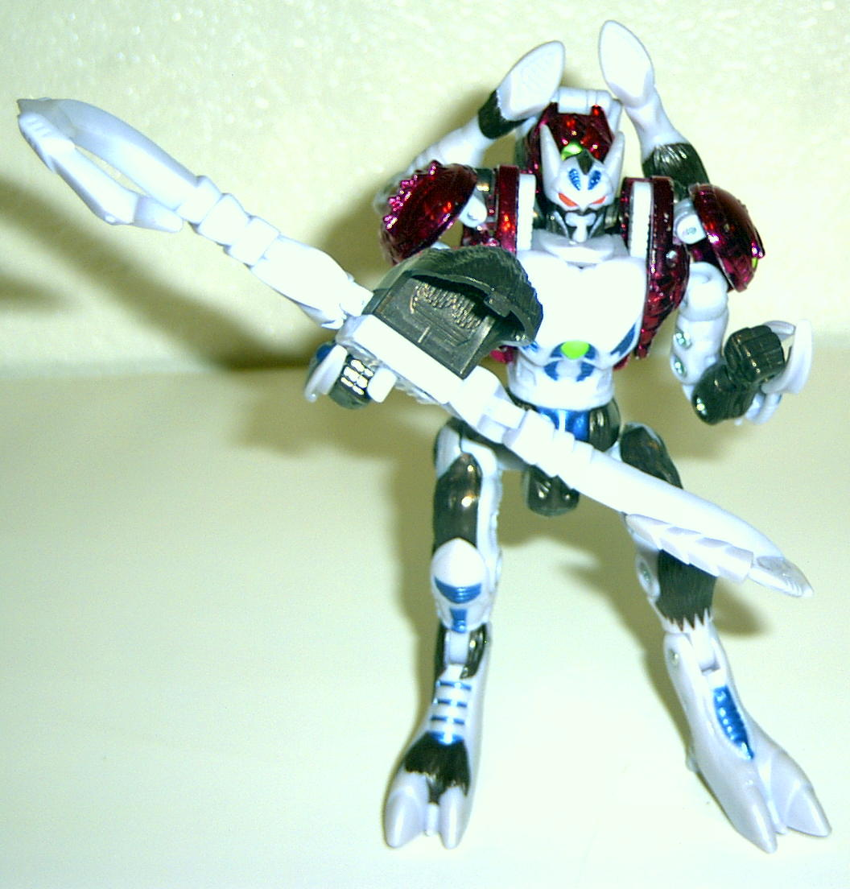

Ramulus
Ramulus

Allegiance
: Maximal
Size
: Deluxe
Difficulty of Transformation
: Hard
Color Scheme
: Chrome maroon, lavender,
and brown, with some spots of blue and neon green
Rating
: 8.7
Beast mode is a ram.
This mode is very nice on the top, but there are a lot of extras on the
bottom, including his robot chest and hands. His horns sort of get in the
way of his head movement in this mode, and this is very annoying, because
he can't look straight ahead. If you take off his horns, he looks very
much like a horse in this mode. His spark orb is under his ram head plate.
Robot mode is extremely
nice-looking. The only extras are his ram head and front legs on his back,
but these are small in comparison to the rest of his body and dont get
in the way much. He has an extremely cool, large gun made out of his ram
horns and some fur that looks like a pulsar cannon. He has nice, thick
legs, so he can stand very easily.
A very nice transformer
in robot mode and an okay transformer in beast mode. Highly recommended.
Ramulus Bio
:
FUNCTION: Scout, Survivalist
Ramulus stasis pod crashed in a mountainous
region of prehistoric Earth during the onset of the quantum surge. Isolated,
damaged and forced to develop his own survival tactics, Ramulus trusts
neither Maximal nor Predacon alike. He is reluctant to fight, but brash
and impulsive once provoked. Characteristically calm and reliable when
venturing through unexplored territory in his own. Relishes adventure and
argues that the Maximals success depends on their continual repositioning
and relocation. Longs to see Cybertron. Ramulus wields a double slagmaker
cannon in robot mode and his fractured Spark crystal generates disruptive
ion pulses.
Strength: 7.2
Intelligence: 8.3
Speed: 5.7
Endurance: 8.2
Rank: 5.0
Courage: 7.8
Firepower: 6.3
Skill: 8.1
Review by Beastbot
Back to
Transmetals 2 Index